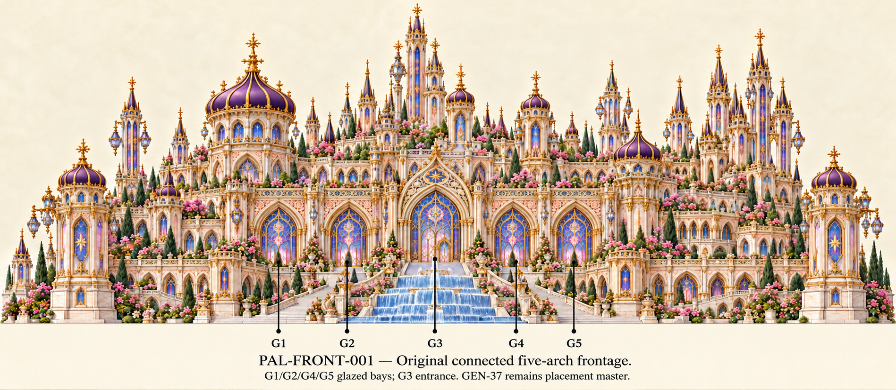
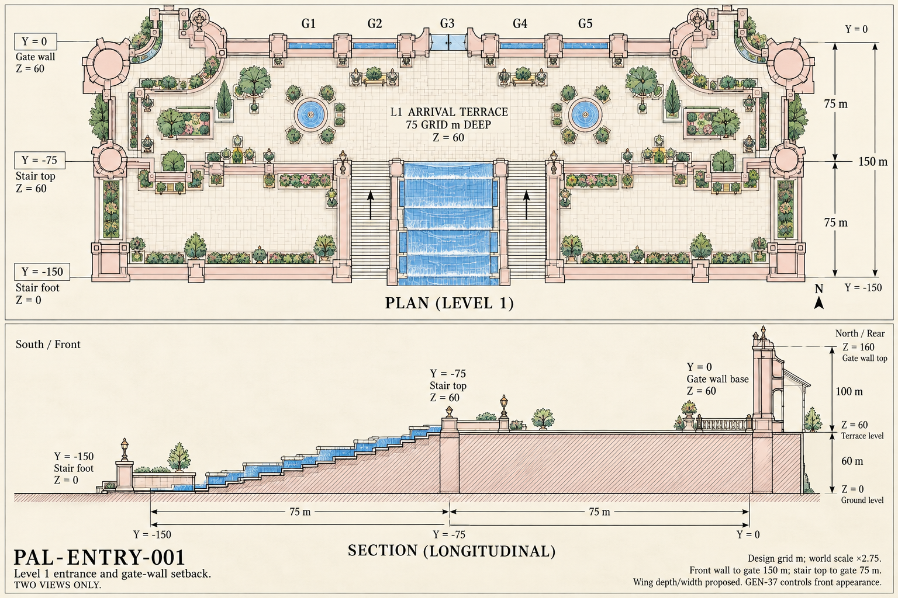

Original GEN-37 remains the placement master. Prior layer sheets were reported inconsistent. These corrections are pending comparison. Open one image at a time.
Relationships and dimensions · Coordinates, prompts and source anchors · Exact original front
Minimal source-based labeling edit retains the connected five-bay wall and major lateral tower groups; leaders now identify the large arches. Caption layout affects displayed vertical extent; GEN-37 remains the exact source and height/placement master, not this generated edit.

True overhead layout and side section show consecutive 75 grid m bands, total 150 grid m wall-to-wall gap, stair top Z=60 and gate base after the terrace at Y=0. Wing and tower footprints are proposed and simplified; section height graphics are schematic, so numeric constraints and GEN-37 source control rather than pixel measurements.
